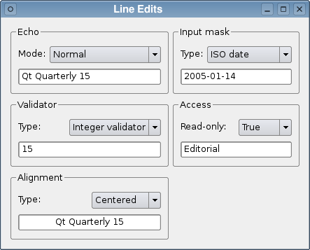

| Home |
Files:
The Line Edits example demonstrates the many ways that QLineEdit can be used, and shows the effects of various properties and validators on the input and output supplied by the user.

The example consists of a single TWindow type, containing a selection of line edits with different input constraints and display properties that can be changed by selecting items from comboboxes. Presenting these together helps developers choose suitable properties to use with line edits, and makes it easy to compare the effects of each validator on user input.
The Window type inherits QWidget and contains a constructor, an OnInit() method, and several slots:
Type TWindow Extends QWidget Field echoLineEdit:QLineEdit Field validatorLineEdit:QLineEdit Field alignmentLineEdit:QLineEdit Field inputMaskLineEdit:QLineEdit Field accessLineEdit:QLineEdit Method Create:TWindow() Return Super._Create() End Method Method echoChanged(index:Int) Method validatorChanged(index:Int) Method alignmentChanged(index:Int) Method inputMaskChanged(index:Int) Method accessChanged(index:Int)
The slots are used to update the type of validator used for a given line edit when a new validator has been selected in the associated combobox. The line edits are stored in the window for use in these slots.
The OnInit method is used to set up the line edits, validators, and comboboxes, connect signals from the comboboxes to slots in the TWindow type, and arrange the child widgets in layouts.
We begin by constructing a group box to hold a label, combobox, and line edit so that we can demonstrate the QLineEdit::echoMode property:
Method OnInit()
Local echoGroup:QGroupBox = New QGroupBox.Create(tr("Echo"))
Local echoLabel:QLabel = New QLabel.Create(tr("Mode:"))
Local echoComboBox:QComboBox = New QComboBox.Create()
echoComboBox.addItem(tr("Normal"))
echoComboBox.addItem(tr("Password"))
echoComboBox.addItem(tr("PasswordEchoOnEdit"))
echoComboBox.addItem(tr("No Echo"))
echoLineEdit = New QLineEdit.Create()
echoLineEdit.SetFocus()
At this point, none of these widgets have been arranged in layouts. Eventually, the echoLabel, echoComboBox, and echoLineEdit will be placed in a vertical layout inside the echoGroup group box.
Similarly, we construct group boxes and collections of widgets to show the effects of QIntValidator and QDoubleValidator on a line edit's contents:
Local validatorGroup:QGroupBox = New QGroupBox.Create(tr("Validator"))
Local validatorLabel:QLabel = New QLabel.Create(tr("Type:"))
Local validatorComboBox:QComboBox = New QComboBox.Create()
validatorComboBox.addItem(tr("No validator"))
validatorComboBox.addItem(tr("Integer validator"))
validatorComboBox.addItem(tr("Double validator"))
validatorLineEdit = New QLineEdit.Create()
Text alignment is demonstrated by another group of widgets:
Local alignmentGroup:QGroupBox = New QGroupBox.Create(tr("Alignment"))
Local alignmentLabel:QLabel = New QLabel.Create(tr("Type:"))
Local alignmentComboBox:QComboBox = New QComboBox.Create()
alignmentComboBox.addItem(tr("Left"))
alignmentComboBox.addItem(tr("Centered"))
alignmentComboBox.addItem(tr("Right"))
alignmentLineEdit = New QLineEdit.Create()
QLineEdit supports the use of input masks. These only allow the user to type characters into the line edit that follow a simple specification. We construct a group of widgets to demonstrate a selection of predefined masks:
Local inputMaskGroup:QGroupBox = New QGroupBox.Create(tr("Input mask"))
Local inputMaskLabel:QLabel = New QLabel.Create(tr("Type:"))
Local inputMaskComboBox:QComboBox = New QComboBox.Create()
inputMaskComboBox.addItem(tr("No mask"))
inputMaskComboBox.addItem(tr("Phone number"))
inputMaskComboBox.addItem(tr("ISO date"))
inputMaskComboBox.addItem(tr("License key"))
inputMaskLineEdit = New QLineEdit.Create()
Another useful feature of QLineEdit is its ability to make its contents read-only. This property is used to control access to a line edit in the following group of widgets:
Local accessGroup:QGroupBox = New QGroupBox.Create(tr("Access"))
Local accessLabel:QLabel = New QLabel.Create(tr("Read-only:"))
Local accessComboBox:QComboBox = New QComboBox.Create()
accessComboBox.addItem(tr("False"))
accessComboBox.addItem(tr("True"))
accessLineEdit = New QLineEdit.Create()
Now that all the child widgets have been constructed, we connect signals from the comboboxes to slots in the TWindow object:
connect(echoComboBox, "activated", Self, "echoChanged") connect(validatorComboBox, "activated", Self, "validatorChanged") connect(alignmentComboBox, "activated", Self, "alignmentChanged") connect(inputMaskComboBox, "activated", Self, "inputMaskChanged") connect(accessComboBox, "activated", Self, "accessChanged")
Each of these connections use the QComboBox::activated() signal that supplies an integer to the slot. This will be used to efficiently make changes to the appropriate line edit in each slot.
We place each combobox, line edit, and label in a layout for each group box, beginning with the layout for the echoGroup group box:
Local echoLayout:QGridLayout = New QGridLayout.Create() echoLayout.addWidget(echoLabel, 0, 0) echoLayout.addWidget(echoComboBox, 0, 1) echoLayout.addWidgetSpan(echoLineEdit, 1, 0, 1, 2) echoGroup.setLayout(echoLayout)
The other layouts are constructed in the same way:
Local validatorLayout:QGridLayout = New QGridLayout.Create() validatorLayout.addWidget(validatorLabel, 0, 0) validatorLayout.addWidget(validatorComboBox, 0, 1) validatorLayout.addWidgetSpan(validatorLineEdit, 1, 0, 1, 2) validatorGroup.setLayout(validatorLayout) Local alignmentLayout:QGridLayout = New QGridLayout.Create() alignmentLayout.addWidget(alignmentLabel, 0, 0) alignmentLayout.addWidget(alignmentComboBox, 0, 1) alignmentLayout.addWidgetSpan(alignmentLineEdit, 1, 0, 1, 2) alignmentGroup.setLayout(alignmentLayout) Local inputMaskLayout:QGridLayout = New QGridLayout.Create() inputMaskLayout.addWidget(inputMaskLabel, 0, 0) inputMaskLayout.addWidget(inputMaskComboBox, 0, 1) inputMaskLayout.addWidgetSpan(inputMaskLineEdit, 1, 0, 1, 2) inputMaskGroup.setLayout(inputMaskLayout) Local accessLayout:QGridLayout = New QGridLayout.Create() accessLayout.addWidget(accessLabel, 0, 0) accessLayout.addWidget(accessComboBox, 0, 1) accessLayout.addWidgetSpan(accessLineEdit, 1, 0, 1, 2) accessGroup.setLayout(accessLayout)
Finally, we place each group box in a grid layout for the TWindow object and set the window title:
Local layout:QGridLayout = New QGridLayout.Create()
layout.addWidget(echoGroup, 0, 0)
layout.addWidget(validatorGroup, 1, 0)
layout.addWidget(alignmentGroup, 2, 0)
layout.addWidget(inputMaskGroup, 0, 1)
layout.addWidget(accessGroup, 1, 1)
setLayout(layout)
setWindowTitle(tr("Line Edits"))
End Method
The slots respond to signals emitted when the comboboxes are changed by the user.
When the combobox for the Echo group box is changed, the echoChanged() slot is called:
Method echoChanged(index:Int) Select index Case 0 echoLineEdit.setEchoMode(QLineEdit.Normal) Case 1 echoLineEdit.setEchoMode(QLineEdit.Password) Case 2 echoLineEdit.setEchoMode(QLineEdit.PasswordEchoOnEdit) Case 3 echoLineEdit.setEchoMode(QLineEdit.NoEcho) End Select End Method
The slot updates the line edit in the same group box to use an echo mode that corresponds to the entry described in the combobox.
When the combobox for the Validator group box is changed, the validatorChanged() slot is called:
Method validatorChanged(index:Int) Select index Case 0 validatorLineEdit.setValidator(Null) Case 1 validatorLineEdit.setValidator(New QIntValidator.Create(validatorLineEdit)) Case 2 validatorLineEdit.setValidator(New QDoubleValidator.CreateWithRange(-999.0, 999.0, 2, validatorLineEdit)) End Select End Method
The slot either creates a new validator for the line edit to use, or it removes the validator in use by calling QLineEdit::setValidator() with a zero pointer. We clear the line edit in this case to ensure that the new validator is initially given valid input to work with.
When the combobox for the Alignment group box is changed, the alignmentChanged() slot is called:
Method alignmentChanged(index:Int) Select index Case 0 alignmentLineEdit.setAlignment(Qt_AlignLeft) Case 1 alignmentLineEdit.setAlignment(Qt_AlignCenter) Case 2 alignmentLineEdit.setAlignment(Qt_AlignRight) End Select End Method
This changes the way that text is displayed in the line edit to correspond with the description selected in the combobox.
The inputMaskChanged() slot handles changes to the combobox in the Input Mask group box:
Method inputMaskChanged(index:Int)
Select index
Case 0
inputMaskLineEdit.setInputMask("")
Case 1
inputMaskLineEdit.setInputMask("+99 99 99 99 99;_")
Case 2
inputMaskLineEdit.setInputMask("0000-00-00")
inputMaskLineEdit.setText("00000000")
inputMaskLineEdit.setCursorPosition(0)
Case 3
inputMaskLineEdit.setInputMask(">AAAAA-AAAAA-AAAAA-AAAAA-AAAAA;#")
End Select
End Method
Each entry in the relevant combobox is associated with an input mask. We set a new mask by calling the QLineEdit::setMask() method with a suitable string; the mask is disabled if an empty string is used.
The accessChanged() slot handles changes to the combobox in the Access group box:
Method accessChanged(index:Int) Select index Case 0 accessLineEdit.setReadOnly(False) Case 1 accessLineEdit.setReadOnly(True) End Select End Method
Here, we simply associate the False and True entries in the combobox with false and true values to be passed to QLineEdit::setReadOnly(). This allows the user to enable and disable input to the line edit.
| Copyright © 2009 Nokia Corporation and/or its subsidiary(-ies) | BlitzMax Conversion © 2009 Bruce A Henderson |